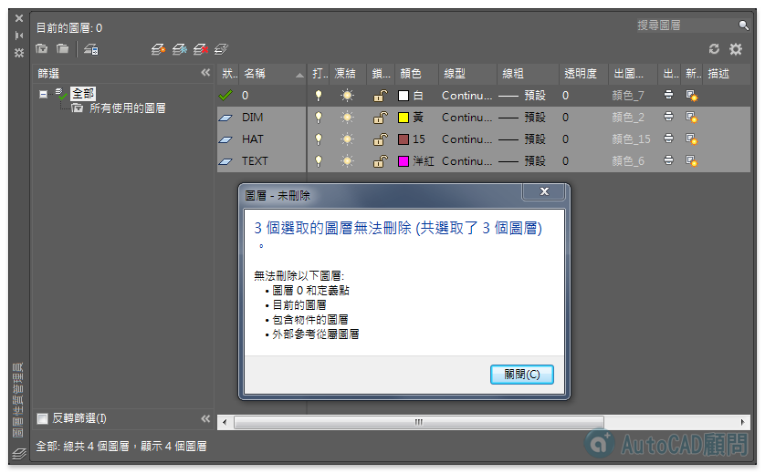

圖層是整個AutoCAD的靈魂功能，如果繪圖時沒有分圖層，那在日後的圖面修改就會很痛苦！
但是有時候在使用PURGE清除圖面中不用的圖層，卻總是有些頑固的圖層無法清除刪掉...

想看看各位有什麼方式可以刪除不用的頑固圖層^_^
需求：刪除圖層。
==================================
※無法刪除以下圖層：
‧圖層 0 和定義點(Defpoints)
‧目前的圖層
‧包含物件的圖層
‧外部參考從屬圖層
==================================
歡迎提出你的做法，你也可參考我的影片方式，大家一起研究！
備用：
https://www.dropbox.com/s/68na0s8z3dlzz1v/test-AD3.zip?dl=0